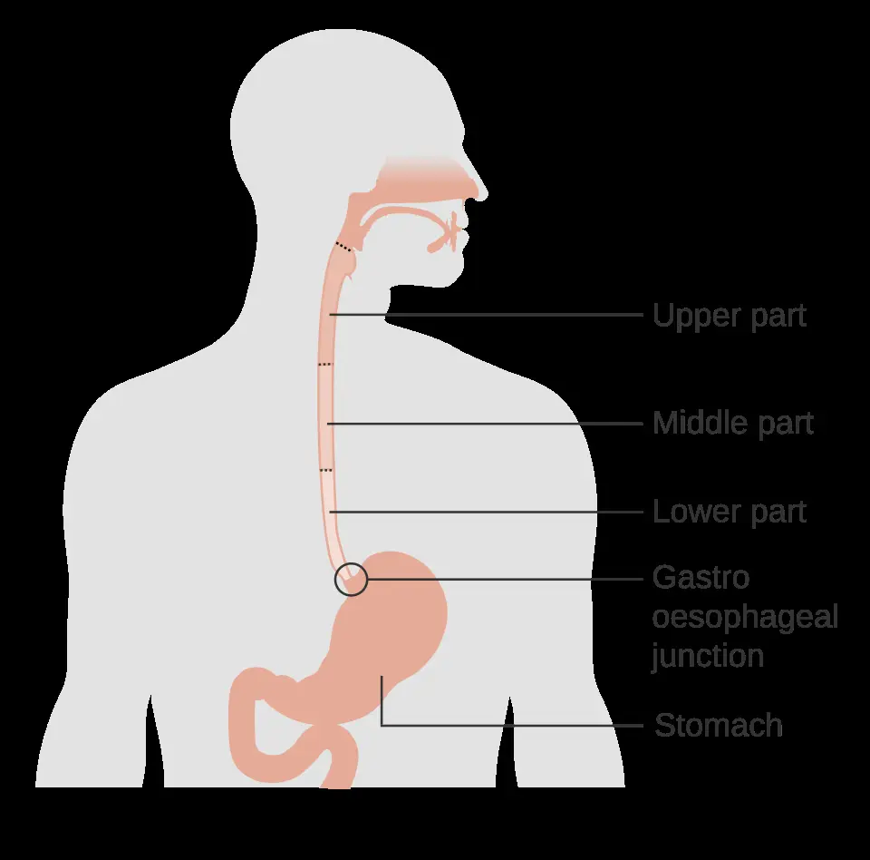

DX.3 — Impaction alimentaire œsophagienne 🚩 E2
L’impaction alimentaire œsophagienne bloque un bol dans l’œsophage et impose une endoscopie dans les deux à six heures quand la salive ne passe plusS1S3. Le geste libère la lumière, mais seules les biopsies révèlent la cause, le plus souvent une sténose ou une œsophagite à éosinophilesS3S4S6.
1. Définition
La Société européenne d’endoscopie digestive (ESGE) compte, dans sa recommandation de 2016, le bol alimentaire bloqué dans l’œsophage parmi les corps étrangers du tractus digestif supérieur de l’adulteS3. L’impaction alimentaire œsophagienne désigne donc l’arrêt d’un bol alimentaire dans la lumière œsophagienne, qui empêche sa progression vers l’estomacS1S3. L’ESGE distingue l’impaction qui obstrue complètement la lumière de celle qui laisse encore passer la salive, car le délai d’endoscopie en dépendS3.
2. Épidémiologie (Suisse, puis Europe)
Aucune incidence nationale suisse n’est publiée ; une série multicentrique de quatre centres suisses décrit toutefois le profil des patients suisses entre 2015 et 2020S2. Les registres nordiques fournissent l’incidence en population, qui atteint 25 cas pour 100 000 habitants par an en IslandeS4. Les causes sous-jacentes changent selon l’âge, ce qui explique que le bilan histologique conditionne la prévention des récidivesS4S5S6. La même série suisse mesure aussi l’écart entre pratique et recommandations, qui touche surtout les biopsiesS2.
Profil des impactions dans quatre centres suisses (2015–2020)
L’étude a recueilli 198 impactions suspectes d’origine éosinophile dans quatre services de gastroentérologie suisses, dont le service de l’Hôpital universitaire de ZurichS2. Elle a exclu les sténoses peptiques et les cancers connus, ce qui sélectionne une population jeune et majoritairement masculineS2.
| Donnée | Valeur | Source |
|---|---|---|
| Âge médian | 51 ans | S2 |
| Femmes | 29,8 % | S2 |
| Impaction antérieure | 28 % | S2 |
| Atopie connue | 50,5 % des patients au statut connu | S2 |
| Délai entre début des symptômes et arrivée aux urgences | médiane 270 minutes | S2 |
| Délai entre urgences et endoscopie | médiane 150 minutes | S2 |
| Extraction endoscopique nécessaire | 94 % | S2 |
| Intubation élective | 13,6 % | S2 |
| Biopsies œsophagiennes prises | 52 % des patients endoscopés | S2 |
| Nouvelle œsophagite à éosinophiles parmi les biopsiés | 71 patients, soit 68,9 % | S2 |
Le patient attend en médiane 270 minutes avant d’arriver aux urgences, alors que l’hôpital réalise ensuite l’endoscopie en 150 minutesS2. Le retard tient donc surtout au patient, ce qui justifie une information claire après chaque premier épisodeS2.
Incidence et terrain en Europe du Nord
| Chiffre | Population | Année | Source |
|---|---|---|---|
| 25 impactions pour 100 000 habitants par an | Adultes, Hôpital universitaire national d’Islande | 2008–2013 | S4 |
| 33,9 épisodes pour 100 000 adultes par an | Région du Jutland du Nord, Danemark | 2021 | S5 |
| 65 % d’hommes, âge médian 62 ans | 308 patients islandais | 2008–2013 | S4 |
| 58,7 % d’hommes, âge médian 66 ans | 150 patients danois | 2021 | S5 |
| Viande 68 %, poisson 12 %, légumes 4 % | Nature du bol en Islande | 2008–2013 | S4 |
| Récidive chez 21 % des patients | Islande | 2008–2013 | S4 |
Le registre suédois de Trollhättan montre davantage d’impactions en été et en automne qu’en hiver et au printempsS10. Cette variation saisonnière apparaît surtout chez les patients atopiques, ce qui rappelle l’origine allergique fréquente de l’œsophagite à éosinophilesS10.
Causes retrouvées après désobstruction
| Cause | Islande 2008–2013 | Danemark 2021 | Krefeld 2017–2021 |
|---|---|---|---|
| Sténose œsophagienne | 45 %S4 | 15,3 %S5 | 57,6 % avec l’œsophagite à éosinophiles et l’anneau de SchatzkiS8 |
| Hernie hiatale | 22 %S4 | — | — |
| Œsophagite à éosinophiles | 16 %S4 | 17,3 %S5 | comprise ci-dessus |
| Cancer œsophagien ou du cardia | 2 %S4 | 5,3 %S5 | 18 % avec le cancer bronchiqueS8 |
| Anneau de Schatzki | — | 4,0 %S5 | compris ci-dessus |
| Achalasie ou trouble moteur | — | 2,7 %S5 | 4,5 %S8 |
| Aucune cause établie | — | 66,0 %S5 | 16,7 %S8 |
La recommandation européenne sur l’œsophagite à éosinophiles indique cette maladie chez jusqu’à 50 % des patients endoscopés pour impactionS6. Au Danemark, deux patients sur trois restent sans cause, car la moitié d’entre eux n’a jamais reçu de biopsie œsophagienneS5. Ce chiffre ne mesure donc pas l’absence de maladie, mais l’absence de bilanS5.
Pratique suisse réelle et recommandations : les écarts mesurés
| Geste | Pratique observée dans quatre centres suisses | Recommandation |
|---|---|---|
| Poussée du bol vers l’estomac | 54,5 % des casS2 | Geste suggéré en premier par l’ESGES3 |
| Extraction par traction | 28,3 % des casS2 | Recours si la poussée échoueS3 |
| Passage spontané avant l’endoscopie | 9,1 % des casS2 | Endoscopie diagnostique tout de mêmeS3 |
| Pince, filet ou anse | 15,7 %, 5,6 % et 2,0 % des casS2 | Instrument adapté au type et au siège du bolS3 |
| Glucagon aux urgences | 3 patientsS2 | Ne doit pas retarder l’endoscopieS3 |
| Biopsies pendant l’épisode | 52 % des patients endoscopésS2 | Bilan histologique systématiqueS3 |
| Endoscopie de contrôle conseillée | 82,3 % des comptes rendusS2 | Recherche de la causeS3 |
Les complications ont touché 6,1 % des patients suisses, et la prise de biopsies n’a augmenté ni les hospitalisations ni les complicationsS2. Parmi les 89 patients non biopsiés, 61 ont bénéficié d’une endoscopie de contrôle, ce qui laisse près d’un tiers sans diagnostic histologiqueS2. La biopsie pendant l’urgence évite donc un second examen et ne coûte aucun risque supplémentaire mesurableS2.
3. Physiopathologie
Le bol s’arrête là où la lumière est la plus étroite ; il faut donc connaître la base anatomique de l’œsophage avant d’interpréter la plainteS1. La chaîne causale part d’un rétrécissement ou d’un trouble moteur, puis mène à l’obstruction, à la stase salivaire et à la souffrance muqueuseS1S3. Chaque maillon se relie à un examen qui le montre et à un geste qui le corrige, comme le résume le tableau de corrélation. Chez l’adulte jeune, le remodelage de l’œsophagite à éosinophiles est la cause qu’il faut savoir reconnaîtreS6.
Base à connaître : les trois rétrécissements de l’œsophage
L’œsophage comprend trois rétrécissements physiologiques : le sphincter supérieur, le contact de la crosse aortique en regard de la quatrième vertèbre thoracique et le sphincter inférieurS1. Chez l’adulte, le sphincter inférieur constitue le passage le plus étroit du tube digestif, d’où la fréquence des impactions à la jonction œso-gastriqueS1. Une impaction du tiers supérieur se localise bien, tandis qu’une impaction distale produit une gêne vague que le patient situe malS1.
Œsophage et jonction œso-gastrique, vue de profil. Ce schéma publié par Cancer Research UK (Royaume-Uni) montre le tube digestif supérieur en vue latérale, avec des légendes en anglais.

Sur ce schéma brut, le lecteur repère d’abord seul l’entrée de l’œsophage et la jonction avec l’estomac.
La copie annotée montre, numérotés, les trois rétrécissements que la lecture guidée explique.
- Le sphincter œsophagien supérieur ferme l’entrée de l’œsophage et constitue le premier rétrécissement physiologique.
- Le tiers moyen croise la crosse aortique en regard de la quatrième vertèbre thoracique, deuxième rétrécissement que le schéma ne dessine pas.
- La jonction œso-gastrique porte le sphincter inférieur, passage le plus étroit du tube digestif adulte et siège le plus fréquent des impactions.
- Le schéma ne montre ni l’aorte ni le diamètre réel : une sténose peptique ou un anneau rétrécit encore ce passage distal.
- La gêne que le patient désigne au cou ne localise pas l’obstacle, car une impaction distale donne une plainte vague.
Ce que l'image décide. Le médecin suspecte d’abord un obstacle distal et confie la localisation exacte à l’endoscopie, sans se fier au point douloureux désigné.

Le schéma montre pourquoi une sténose peptique, un anneau ou une œsophagite fibrosante transforme un passage étroit en piège pour un morceau de viande mal mâchéS1S4. La muqueuse retenue sous le bol s’œdématie puis se nécrose, ce qui ouvre la voie à la perforation, à la médiastinite ou à l’abcèsS1.
Chaîne causale en quatre temps
| Temps | Ce qui se passe | Traduction clinique |
|---|---|---|
| Amorce | Un rétrécissement organique, une paroi rigide ou un défaut de péristaltisme réduit le calibre utile de la lumière. | Le patient rapporte souvent une dysphagie antérieure ou un épisode identique. |
| Développement | Un bolus de viande ou de poisson insuffisamment mâché se bloque au point le plus étroit. | La sensation de blocage survient brutalement pendant le repas. |
| Installation | La lumière se ferme, la salive ne passe plus et remonte dans le pharynx. | Le patient crache sa salive et régurgite tout ce qu’il tente d’avaler. |
| Maintien | La pression du bol entraîne œdème puis nécrose de la muqueuse. | Une douleur croissante, une fièvre ou un emphysème signalent la perforation. |
L’incapacité à déglutir sa propre salive indique en règle générale une obstruction complète de la lumière œsophagienneS1. La salive accumulée au-dessus de l’obstacle peut alors être aspirée dans les voies respiratoires, surtout pendant l’endoscopieS1S3. Une rétention prolongée au-delà de 24 heures provoque un risque élevé de lésions œsophagiennes graves et à la perforationS1.
Corrélation : perturbation, exploration, traitement
| Perturbation | Examen qui la montre | Traitement qui la corrige |
|---|---|---|
| Lumière fermée par le bol | Clinique : salive non déglutie ; endoscopie | Poussée douce du bol vers l’estomac ou extraction endoscopiqueS3 |
| Inflammation éosinophile de la paroi | Au moins six biopsies étagéesS6 | Traitement de l’œsophagite à éosinophiles (DX.5) |
| Sténose fibreuse ou peptique | Endoscopie après désobstruction | Dilatation et traitement antisécrétoire (DX.4) |
| Tumeur maligne | Endoscopie avec biopsies | Filière oncologique (DX.6) |
| Perforation | Tomodensitométrie (TDM) cervico-thoraciqueS3 | Avis chirurgical et réparationS1 |
Pourquoi l’œsophagite à éosinophiles bloque les aliments
L’inflammation éosinophile chronique remodèle la paroi : elle réduit sa compliance et forme des sténoses, principal facteur de risque d’impactionS6. Chez 200 adultes suisses, les signes fibrosants passaient de 46,5 % quand le retard diagnostique restait inférieur à deux ans à 87,5 % au-delà de 20 ansS6. Le calibre œsophagien était inférieur à 10 mm après 14,8 ans de retard, alors qu’il atteignait au moins 17 mm après cinq ansS6.
Le risque de sténose fibreuse augmente avec un rapport de cotes de 2,1 pour chaque décennie d’âge supplémentaireS6. Une impaction chez un adulte jeune représente donc souvent la première manifestation visible d’une maladie installée depuis des annéesS2S6. Le traitement anti-inflammatoire relève du DX.5 ; ce cours retient seulement que la biopsie de l’épisode index permet ce diagnosticS3S6.
4. Démarche diagnostique
La démarche pose d’abord la question respiratoire, car un corps étranger des voies aériennes tue en quelques minutes alors que l’impaction laisse le temps d’organiser l’endoscopieS1S3. Elle cherche ensuite les complications, puis distingue l’obstruction complète de l’obstruction partielle, qui fixe le délai d’endoscopieS3. Le tableau des diagnostics discriminants donne, pour chaque hypothèse, l’élément qui tranche et le piège à éviter. Un raisonnement pas à pas sur un cas chiffré montre l’erreur classique du débutant et la façon de l’éviter.
Obstacle respiratoire ou obstacle digestif
Une toux inefficace, une parole impossible, un stridor ou une cyanose désignent un obstacle des voies aériennes, qui relève des gestes de désobstruction du DX.10. Le patient qui parle, tousse efficacement et respire normalement, mais crache sa salive, porte au contraire un obstacle œsophagienS1. Le service de gastroentérologie du CHUV (Centre hospitalier universitaire vaudois) indique néanmoins une endoscopie urgente dès que les voies aériennes sont compromises, par stridor, toux ou sifflementS1.
Le médecin ne pratique donc pas de compressions abdominales chez un patient qui respire et parle ; il appelle le 144 dès qu’apparaît une détresse respiratoire.
Diagnostics discriminants
| Diagnostic | Élément qui tranche | Piège | Conduite si positif |
|---|---|---|---|
| 🚩 Corps étranger des voies aériennes (DX.10) | Toux inefficace, aphonie, détresse | Croire à un bol œsophagien chez un patient cyanosé | Gestes de désobstruction, 144 |
| 🚩 Perforation œsophagienne | Douleur intense, fièvre, emphysème sous-cutanéS1 | Une radiographie normale ne l’exclut pas | TDM et avis chirurgicalS3 |
| Impaction alimentaire complète | Salive non déglutieS1 | Faire boire pour « tester » le passage | Endoscopie dans les deux heures, au plus tard six heuresS3 |
| Impaction partielle | Salive avalée, aliments bloqués | Renvoyer le patient à domicile | Endoscopie dans les 24 heuresS3 |
| Arête ou os pointu | Repas de poisson ou de volaille, douleur localisée | Assimiler l’objet à un bol mou | Radiographie puis endoscopie urgente avec protectionS3 |
| Pile ou aimant ingéré | Contexte de l’ingestion | Méconnaître une pile chez l’enfant | Endoscopie urgenteS3 |
Raisonnement pas à pas et erreur du débutant
Un homme de trente-deux ans, asthmatique, arrive aux urgences deux heures après le blocage d’un morceau de poulet, et il crache sa salive. Il a déjà vécu un épisode semblable deux ans plus tôt, résolu spontanément, sans endoscopie ultérieure.
- Le médecin constate que le patient parle, tousse efficacement et sature normalement : l’obstacle est donc digestif et non respiratoire.
- Il note que la salive ne passe plus, ce qui signe une obstruction complète et impose une endoscopie de préférence dans les deux heures, au plus tard dans les six heuresS1S3.
- Il ne trouve ni fièvre, ni emphysème, ni douleur intense, ce qui rend la TDM inutile à ce stadeS3.
- Il appelle l’endoscopiste sans attendre l’effet d’un médicament, car aucun n’a démontré d’effet supérieur au placeboS3S7.
- Il demande des biopsies étagées, car l’âge, l’atopie et la récidive rendent l’œsophagite à éosinophiles très probableS2S6.
L’erreur classique consiste à injecter du glucagon, à attendre une heure, puis à renvoyer le patient soulagé sans biopsie. Cette conduite retarde le geste, expose à l’aspiration et laisse évoluer la fibrose qui provoquera la récidive suivanteS3S6S7.
5. Anamnèse ciblée et drapeaux rouges
L’anamnèse reste brève et vise trois décisions : le délai d’endoscopie, le risque de perforation et la cause probableS3. Le médecin caractérise le blocage et ses symptômes associés, recherche les antécédents qui orientent vers la cause et repère les drapeaux rouges.
Caractériser le blocage : typique ou non
| Élément | Forme typique | Pourquoi |
|---|---|---|
| Début | Brutal, pendant un repas de viande ou de poisson | Le bol se bloque au moment où il atteint le rétrécissementS4 |
| Siège ressenti | Cou ou rétrosternal | La localisation n’est fiable que pour le tiers supérieurS1 |
| Salive | Impossible à avaler, crachée | La lumière est ferméeS1 |
| Régurgitation | Immédiate après chaque gorgée | Le liquide bute sur le bol |
| Douleur | Gêne modérée, sans irradiation | Une douleur intense ou croissante n’est pas typique et évoque une lésion pariétaleS1 |
| Respiration | Normale, parole conservée | Une toux ou un stridor signalent une compression ou une aspirationS1 |
Une douleur thoracique violente, une fièvre ou un malaise sortent du tableau typique ; ils imposent de rechercher une perforation avant tout gesteS1S3. L’heure de début compte, car elle fixe le temps écoulé depuis l’obstruction et le délai restant avant l’endoscopieS3.
Questions qui orientent vers la cause
| Question | Raison physiopathologique |
|---|---|
| Avez-vous déjà eu un aliment bloqué ? | La récidive touche 50 % des patients atteints d’œsophagite à éosinophiles en IslandeS4 |
| Avalez-vous difficilement depuis des mois ? | Une dysphagie progressive évoque une sténose peptique ou un cancer |
| Avez-vous des brûlures rétrosternales ? | Un reflux ancien oriente vers la sténose peptique (DX.4) |
| Souffrez-vous d’asthme, de rhinite ou d’eczéma ? | L’atopie accompagne l’œsophagite à éosinophilesS2 |
| Avez-vous perdu du poids ? | L’amaigrissement oriente vers un cancer (DX.6) |
| Prenez-vous des anticoagulants ? | L’information prépare l’endoscopie et une éventuelle dilatation |
Un homme jeune et atopique qui récidive évoque d’abord une œsophagite à éosinophiles, alors qu’un sujet âgé qui maigrit évoque d’abord une sténose ou un cancerS2S5.
Drapeaux rouges et action immédiate
| 🚩 Drapeau rouge | Signification | Action immédiate |
|---|---|---|
| Toux inefficace, stridor, cyanose | Obstacle ou compression des voies aériennes | Appel au 144, gestes de désobstruction (DX.10) |
| Salive impossible à avaler | Obstruction complèteS1 | Endoscopie de préférence dans les deux heuresS3 |
| Douleur thoracique intense, fièvre | Perforation, médiastiniteS1 | TDM et avis chirurgicalS3 |
| Emphysème sous-cutané cervical | PerforationS1 | TDM, jeûne strict, chirurgien |
| Objet pointu possible | Risque de lacérationS3 | Endoscopie urgente avec dispositif protecteurS3 |
| Impaction depuis plus de 24 heures | Nécrose muqueuse probableS1 | Endoscopie sans attendreS1 |
6. Examen physique ciblé, région par région
L’examen physique, le plus souvent normal, sert surtout à reconnaître une complication et à évaluer la tolérance respiratoireS1S3. Il suit l’ordre du chevet : état général et respiration, puis bouche et pharynx, cou et enfin thorax et abdomen.
État général et respiration
Le médecin observe d’abord la parole, la toux, la fréquence respiratoire et la saturation, car ces signes décident entre la filière respiratoire et la filière digestiveS3. Une fréquence cardiaque élevée, une fièvre ou une hypotension évoquent une perforation déjà constituée et une médiastinite débutanteS1. Le patient typique reste hémodynamiquement stable et crache régulièrement sa salive, faute de pouvoir l’avalerS1.
Bouche et pharynx
L’inspection de la cavité buccale cherche une stase salivaire, un fragment alimentaire visible ou une arête plantée dans l’amygdaleS1. Une lésion amygdalienne oriente vers un corps étranger pointu et non vers un bol mou, ce qui change la technique d’extractionS1S3. Le médecin ne tente jamais de retirer à l’aveugle un fragment profond, car il risque de le pousser ou de léser la muqueuse.
Cou
La palpation cervicale recherche une crépitation sous la peau, qui traduit de l’air échappé de l’œsophageS1. Un empâtement douloureux, un abcès ou une adénopathie cervicale évoquent aussi une perforation œsophagienneS1. Une douleur précise à la palpation reste peu informative, car le patient projette souvent au cou un obstacle bas situéS1.
Thorax et abdomen
L’auscultation pulmonaire cherche des râles localisés, qui feraient suspecter une aspiration de salive ou de liquide régurgitéS1S3. La série islandaise a relevé un syndrome de Boerhaave dès l’admission, ce qui rappelle que la rupture peut précéder l’endoscopieS4. Un examen thoracique normal n’exclut pas la perforation ; la TDM devient donc nécessaire dès que la clinique inquièteS3.
7. Approche syndromique
L’impaction se présente sous trois syndromes que le médecin doit séparer, car chacun impose un geste distinct : obstruction œsophagienne aiguë, perforation et aspirationS1S3. Le premier est attendu, tandis que les deux autres sont des complications qui changent la prioritéS1. Chaque signe se définit, se recherche et s’explique avant d’entrer dans un syndrome.
Trois syndromes
7.1 Syndrome d’obstruction œsophagienne aiguë
| Signes fonctionnels | Signes physiques | Mécanisme |
|---|---|---|
| Blocage brutal, salive crachée, régurgitations | Stase salivaire buccale, examen par ailleurs normal | Lumière fermée par le bolS1 |
7.2 Syndrome de perforation œsophagienne
| Signes fonctionnels | Signes physiques | Mécanisme |
|---|---|---|
| Douleur cervicale ou thoracique intense, dyspnée | Fièvre, tachycardie, emphysème sous-cutané, abcès cervical | Nécrose de la paroi sous le bolS1 |
7.3 Syndrome d’aspiration
| Signes fonctionnels | Signes physiques | Mécanisme |
|---|---|---|
| Toux, gêne respiratoire | Râles localisés, désaturation | Salive accumulée au-dessus de l’obstacle et inhaléeS3 |
En Islande, l’endoscopie a provoqué une aspiration chez 1,3 % des patients et une perforation chez 0,3 %S4. Ces taux bas supposent une endoscopie précoce et une protection des voies aériennes quand la rétention salivaire est importanteS3S4.
Définition, recherche et mécanisme des signes
| Signe | Définition | Comment le rechercher | Mécanisme |
|---|---|---|---|
| Stase salivaire | La salive s’accumule en bouche et le patient la crache | Observer le patient, lui demander d’avaler sans boire | La lumière fermée arrête la saliveS1 |
| Régurgitation | Le liquide avalé remonte sans effort de vomissement | Interroger, sans faire boire si la salive ne passe plus | Le liquide bute sur le bol |
| Odynophagie | La déglutition devient douloureuse | Interroger sur la douleur pendant la déglutition | Une lésion muqueuse ou un objet pointu irrite la paroiS3 |
| Emphysème sous-cutané | Une crépitation neigeuse se palpe sous la peau du cou | Palper les creux sus-claviculaires et la base du cou | L’air échappé de l’œsophage diffuse dans les tissusS1 |
| Râles localisés | Des crépitants apparaissent dans un territoire pulmonaire | Ausculter les bases et le côté droit | La salive inhalée encombre les alvéolesS3 |
8. Diagnostic positif et critères
Aucune société savante ne propose de critères diagnostiques chiffrés ; l’ESGE fonde l’évaluation sur l’anamnèse, les symptômes et un examen centré sur les complicationsS3. Le diagnostic positif repose ainsi sur un faisceau clinique que l’endoscopie confirme et traite dans le même tempsS1S3. La gradation de l’urgence découle ensuite de deux questions : la salive passe-t-elle, et existe-t-il une complicationS3 ?
Ce qui suffit et ce qui ne suffit pas
| Élément | Valeur | Commentaire |
|---|---|---|
| Blocage brutal pendant un repas | Suffit à suspecter l’impaction | L’anamnèse oriente l’ESGE avant toute imagerieS3 |
| Salive impossible à avaler | Suffit à retenir une obstruction complète | Signe clinique cardinalS1 |
| Radiographie normale | Ne suffit pas à exclure le bol | Le bol non osseux reste radiotransparentS3 |
| Disparition des symptômes | Ne suffit pas à clore le dossier | La cause reste à établir par biopsiesS3S6 |
| Visualisation endoscopique du bol | Confirme le diagnostic | L’endoscopie traite dans le même tempsS3 |
Gradation de l’urgence selon l’ESGE 2016
| Situation | Délai d’endoscopie | Source |
|---|---|---|
| Obstruction complète, objet pointu ou pile dans l’œsophage | Urgence absolue : de préférence dans les deux heures, au plus tard dans les six heures | S3 |
| Impaction sans obstruction complète | Urgence : dans les 24 heures | S3 |
| Suspicion de perforation | TDM d’abord, puis décision médico-chirurgicale | S3 |
Le service du CHUV ajoute qu’aucun bol ne doit rester plus de 24 heures dans l’œsophage, en raison du risque élevé de lésion et de perforationS1. Le délai de 24 heures fixe donc un maximum et non une période d’observation à domicileS1S3.
9. Examens complémentaires
9.a L’œso-gastro-duodénoscopie (OGD) thérapeutique constitue l’examen de référence, car elle confirme le bol, le retire et inspecte la paroi sous-jacenteS1S3.
9.b En première intention, l’ESGE ne recommande aucune imagerie pour un bol alimentaire sans os ni complicationS3.
9.c La radiographie standard et la TDM répondent à des questions précises : objet radio-opaque, objet inconnu ou perforationS3.
9.d Les biopsies étagées recherchent ensuite la cause, et l’ESGE proscrit le transit barytéS3S6.
Œso-gastro-duodénoscopie : indication, technique, pièges
Indication. Toute impaction alimentaire œsophagienne relève d’une OGD thérapeutique, dans les délais fixés au point 8S3.
Prescription. Le médecin prescrit une OGD urgente en précisant l’heure de début, le passage ou non de la salive et l’éventuel objet pointuS3.
Technique. L’ESGE suggère de pousser doucement le bol dans l’estomac et de passer à l’extraction si cette poussée échoueS3. Une série allemande de Krefeld n’a pu pousser le bol entier que dans 9 % des cas et a retiré 57,6 % des bols par capuchon endoscopique seulS8. Les auteurs déconseillent donc toute poussée aveugle, sans vision de la lumière située en avalS8.
| Résultat | Signification | Conduite |
|---|---|---|
| Bol visible, lumière d’aval franchissable | Impaction simple | Poussée douce vers l’estomacS3 |
| Bol fixé, aval non visible | Risque de perforation à la poussée | Extraction par anse, filet ou capuchonS3S8 |
| Muqueuse en sillons, anneaux, exsudats blancs | Aspect d’œsophagite à éosinophiles | Biopsies étagéesS6 |
| Sténose courte et lisse au-dessus de la jonction | Sténose peptique probable | Biopsies, traitement du reflux (DX.4) |
| Sténose irrégulière, bourgeonnante | Cancer possible | Biopsies multiples, bilan d’extension (DX.6) |
| Ulcération profonde ou brèche | Perforation | Arrêt du geste, TDM, chirurgienS1S3 |
Le service du CHUV indique un taux de succès de l’extraction proche de 100 % avec l’œsophagoscopie souple, la rigide restant de second choixS1. En Islande, la première endoscopie a retiré le bol avec succès dans 98 % des casS4.
Radiographie standard
Indication. L’ESGE recommande la radiographie seulement si l’objet est radio-opaque ou inconnu ; elle précise alors sa présence, son siège, sa taille et son nombreS3.
Piège. Un bol de viande reste invisible ; une radiographie normale ne permet donc ni d’exclure l’impaction ni de retarder l’endoscopieS3. Le service du CHUV propose deux incidences, de face et de profil, lorsqu’un corps étranger radio-opaque reste plausibleS1.
Tomodensitométrie cervico-thoracique
Indication. L’ESGE recommande la TDM chez tout patient suspect de perforation ou d’une autre complication susceptible d’exiger une chirurgieS3.
Interprétation. De l’air dans les tissus cervicaux ou le médiastin, un épanchement ou une collection autour de l’œsophage signent la brèche et ses conséquences.
Conduite. Une perforation confirmée fait retirer l’objet par voie chirurgicale, afin de réparer la paroi dans le même tempsS1.
Biopsies étagées : la recherche de la cause
L’ESGE recommande, en plus du geste thérapeutique, un bilan de la maladie sous-jacente qui comprend une évaluation histologiqueS3. La recommandation européenne sur l’œsophagite à éosinophiles recommande au moins six biopsies réparties sur au moins deux niveaux de l’œsophageS6. Elle exige ces biopsies même si la muqueuse paraît normale, car l’aspect endoscopique reste normal chez une partie des patientsS6.
| Résultat histologique | Signification | Conduite |
|---|---|---|
| Au moins 15 éosinophiles par champ à fort grossissement | Seuil de l’œsophagite à éosinophilesS6 | Traitement spécifique (DX.5) |
| Moins de 5 éosinophiles par champ, inflammation peptique | Reflux probableS6 | Traitement du reflux (DX.4) |
| Carcinome | Cancer œsophagien | Filière oncologique (DX.6) |
| Muqueuse normale | Cause motrice ou anneau possible | Manométrie selon la clinique (DX.7) |
En Suisse, seuls 52 % des patients endoscopés ont reçu des biopsies, alors que 68,9 % des biopsiés présentaient une œsophagite à éosinophiles nouvelleS2. La probabilité de biopsie baissait avec l’âge et avec une œsophagite déjà connue, deux situations où l’endoscopiste croit à tort connaître la causeS2. La recommandation danoise prévoit huit biopsies et une endoscopie dans les deux semaines si le bilan n’a pas été fait pendant l’urgenceS5.
Transit baryté : pourquoi il est proscrit
L’ESGE déconseille le transit baryté, car le patient risque d’aspirer le produit et parce que le baryum gêne ensuite la vision endoscopiqueS3. Le patient qui ne déglutit plus sa salive ne peut d’ailleurs pas avaler le contraste, qui stagne au-dessus du bol.
10. Arbre décisionnel
L’arbre ci-dessous traite d’abord ce qui tue, puis ce qui fixe le délai, puis ce qui prévient la récidiveS1S3.
- Si le patient ne parle pas, tousse inefficacement ou se cyanose, alors le médecin appelle le 144 et traite un obstacle des voies aériennes selon le DX.10.
- Si une douleur intense, une fièvre ou un emphysème sous-cutané apparaissent, alors le médecin demande une TDM et un avis chirurgicalS1S3.
- Si la salive ne passe plus ou si un objet pointu est probable, alors l’OGD a lieu de préférence dans les deux heures, au plus tard dans les six heuresS3.
- Si la salive passe encore, alors l’OGD a lieu dans les 24 heures, sans retour à domicile ni traitement d’attenteS1S3.
- Si le bol est retiré ou poussé, alors l’endoscopiste prélève au moins six biopsies étagées pendant le même examenS3S6.
- Si le bol est passé spontanément, alors le médecin programme une endoscopie avec biopsies, dans les deux semaines selon la recommandation danoiseS5.
11. Prise en charge selon les recommandations suisses
11.A But. Le traitement vise à libérer la lumière dans les délais de l’ESGE, sans aspiration ni perforation, puis à établir la cause pour prévenir la récidiveS3.
11.B Moyens. La conduite chronologique d’urgence repose sur l’endoscopie, car aucun traitement médicamenteux n’a montré d’efficacitéS3S7. Le médecin anticipe aussi les complications et les critères de transfert, car un hôpital sans endoscopie de garde ne peut pas tenir le délai de deux heuresS3. Les essais de glucagon ou de butylscopolamine ne doivent jamais retarder l’endoscopieS3S7S9.
Urgence — conduite chronologique
| Temps | Geste | Raison |
|---|---|---|
| Minute 0 | Évaluer parole, toux et respiration ; appeler le 144 en cas de détresse | Exclure l’obstacle respiratoire (DX.10) |
| Minutes 0 à 15 | Arrêter toute prise orale ; installer le patient assis ; poser une voie veineuse | Limiter l’aspiration et préparer la sédation |
| Minutes 0 à 15 | Rechercher fièvre, emphysème, douleur intense | Dépister la perforationS1 |
| Minutes 15 à 30 | Appeler le gastroentérologue de garde en précisant salive, heure de début et objet pointu | Fixer le délai d’endoscopieS3 |
| Avant deux heures, au plus tard six heures | OGD si obstruction complète ou objet pointu | Recommandation ESGES3 |
| Avant 24 heures | OGD si obstruction partielle | Recommandation ESGES3 |
| Pendant l’OGD | Protéger les voies aériennes si la stase est importante ; biopsier | Prévenir l’aspirationS3 ; établir la causeS6 |
Le service du CHUV indique que l’intubation orotrachéale sous anesthésie générale est nécessaire, vu le risque d’aspiration pendant le gesteS1. L’ESGE recommande plutôt de la considérer lorsque le risque d’aspiration est élevé, et la pratique suisse récente ne l’a employée que chez 13,6 % des patientsS2S3. La décision dépend donc de la stase salivaire, de la coopération du patient et de l’avis de l’anesthésiste.
Le médecin ne donne ni boisson gazeuse ni aliment pour « pousser » le bol, car aucun traitement entéral n’a d’efficacité démontréeS7. Au Danemark, l’eau gazeuse reste pourtant administrée en premier geste chez 68 % des patients, sans fondement dans les recommandations européennesS3S5. Le parcours danois illustre ce que coûte une prise en charge par étapes.
Prise en charge par étapes au Danemark (2021)
| Étape | Patients concernés | Désobstruction obtenue par cette seule étape |
|---|---|---|
| Eau gazeuse | 68,0 %S5 | 25,3 % des patientsS5 |
| Injection d’un myorelaxant | 29,3 %S5 | aucun patient par l’injection seuleS5 |
| Extraction endoscopique | 48,7 %S5 | 14,0 % des patients par l’endoscopie seuleS5 |
| Passage spontané | 7,3 %S5 | — |
Au Danemark, 20,7 % des patients n’ont jamais reçu d’endoscopie, et 16,7 % ont récidivé pendant l’étudeS5. Ces chiffres montrent qu’un passage obtenu sans endoscopie laisse la cause inexplorée et le patient exposé à un nouvel épisodeS5. L’ESGE ne retient d’ailleurs aucun traitement médicamenteux ou alimentaire comme alternative à l’endoscopieS3.
Ce qu’il faut prévoir
| Situation à prévoir | Signe d’alerte | Réponse préparée |
|---|---|---|
| Aspiration pendant l’endoscopie | Stase salivaire abondante, toux | Protection des voies aériennes, intubation si le risque est élevéS3 |
| Perforation iatrogène | Douleur croissante après le geste | TDM, jeûne, avis chirurgicalS1S3 |
| Échec de l’extraction souple | Bol fixé malgré poussée et traction | Œsophagoscopie rigide sous anesthésie générale, de second choixS1 |
| Objet pointu découvert | Arête ou os visible | Dispositif protecteur ou surtubeS1S3 |
| Hospitalisation après le geste | Lésion muqueuse, surveillance nécessaire | Lit de surveillance ; 15,7 % des patients suisses ont été hospitalisésS2 |
Le transfert s’impose vers un centre qui dispose d’un endoscopiste et d’un anesthésiste de garde lorsque la salive ne passe plus, car le délai recommandé reste de deux à six heuresS3. Le surtube protège les voies aériennes supérieures, facilite les passages répétés de l’endoscope et évite les lacérations au retrait d’un objet tranchantS1.
Glucagon — GlucaGen® (n° 31489)
| Rubrique | Contenu de l’AIPS (information professionnelle suisse) |
|---|---|
| Classe et mécanisme | Hormone pancréatique qui inhibe le tonus et la motilité des muscles lisses du tube digestifS11 |
| Indications autorisées | Hypoglycémie sévère chez le diabétique traité par insuline ; inhibition de la motilité lors d’explorations digestives de l’adulteS11 |
| Impaction alimentaire | Indication absente de l’AIPS ; la revue Cochrane 2020 ne trouve pas d’effet supérieur au placeboS7 |
| Dose (inhibition de la motilité) | Chez l’adulte, 0,2 à 0,5 mg par voie intraveineuse lente ou 1 mg par voie intramusculaireS11 |
| Délai et durée | Action en une minute par voie intraveineuse, prolongée de 5 à 20 minutesS11 |
| Contre-indications | Phéochromocytome ; hypersensibilité au glucagon ou au lactoseS11 |
| Mises en garde | Hausse de la fréquence cardiaque et de la pression artérielle ; hypoglycémie secondaire chez le patient à jeunS11 |
| Grossesse | Utilisation possible pendant la grossesse selon l’AIPSS11 |
| Allaitement | Utilisation possible pendant l’allaitement selon l’AIPSS11 |
| Enfant | Sécurité et efficacité non établies pour l’inhibition de la motilitéS11 |
Le seul essai randomisé, mené dans quatre centres suédois chez 43 patients, a comparé diazépam puis glucagon intraveineux à un placeboS7. La désobstruction sans geste a atteint 38 % sous traitement contre 32 % sous placebo, une différence non significativeS7. L’AIPS signale aussi des nausées et des vomissements, surtout au-delà de 1 mg ou en injection rapide, ce qui expose un œsophage obstrué à l’aspirationS11.
Butylscopolamine — Buscopan® Inject (n° 17352)
| Rubrique | Contenu de l’AIPS |
|---|---|
| Classe et mécanisme | Anticholinergique antispasmodique, dérivé d’ammonium quaternaireS12 |
| Indications autorisées | Spasmes et troubles de la motilité digestive, biliaire et urinaire ; examens radiologiques ou endoscopiques par voie intraveineuseS12 |
| Impaction alimentaire | Indication absente de l’AIPS ; son emploi provient probablement d’une citation erronée d’un manuelS9 |
| Dose (adulte et adolescent de plus de 12 ans) | 20 à 40 mg par voie sous-cutanée, intramusculaire ou intraveineuse lente, sans dépasser 100 mg par jourS12 |
| Contre-indications | Hypersensibilité au bromure de butylscopolamine ou à un autre composant ; glaucome à angle fermé non traité ; adénome prostatique avec rétention urinaire ; sténoses mécaniques du tractus gastro-intestinal ; iléus paralytique ou obstructif ; mégacôlon ; tachycardie ; myasthénie grave ; voie intramusculaire contre-indiquée sous anticoagulants (risque d'hématomes), voie sous-cutanée ou intraveineuse possibleS12 |
| Mises en garde | Anaphylaxie parfois fatale après injection ; surveillance obligatoireS12 |
| Grossesse | À éviter par précautionS12 |
| Allaitement | Contre-indiqué faute de données sur le passage dans le laitS12 |
Une revue systématique britannique n’a trouvé aucune preuve qu’un médicament fasse mieux que l’attente pour désobstruer un bol mouS9. La butylscopolamine ajoute une tachycardie et un risque anaphylactique sans bénéfice prouvé, ce qui la rend inutile avant l’endoscopieS9S12.
Situations spéciales. Chez l’enfant, l’ESGE et l’ESPGHAN ont publié une recommandation pédiatrique distincte, et la pile ou l’aimant doivent être écartés avant de retenir un bolS3S13. Le sujet âgé, médian à 66 ans au Danemark, porte davantage de sténoses et de cancers, ce qui rend les biopsies encore plus nécessairesS5.
11.C Surveillance. Après une extraction simple, l’ESGE autorise le retour à domicile ; le médecin surveille pourtant douleur, fièvre, dyspnée et hématémèse avant la sortieS3. Toute douleur croissante après le geste impose une TDM, car une perforation iatrogène reste possible même après une endoscopie réussieS3S4. En Suisse, 15,7 % des patients ont été hospitalisés après l’endoscopie, sans lien avec la prise de biopsiesS2.
11.D Pronostic et sortie. Le pronostic immédiat est excellent, mais la récidive atteint 21 % en Islande et 16,7 % au Danemark lorsque la cause n’est pas traitéeS4S5. Le patient sort lorsque les critères de sortie sont tous réunisS3.
Critères de sortie, un par un
- Le patient avale sa salive et des liquides sans gêne ni douleur.
- Il ne présente ni fièvre, ni tachycardie, ni emphysème sous-cutané.
- L’endoscopiste n’a décrit aucune brèche ni ulcération profondeS3.
- Les biopsies ont été prélevées, ou une endoscopie de contrôle est programmée avec une date écriteS5S6.
- Le patient connaît les signes qui imposent un retour immédiat : douleur thoracique, fièvre, dyspnée ou nouveau blocage.
- Le médecin traitant reçoit le compte rendu et la conduite à tenir pour la cause.
12. Prévention
Prévention primaire. Les sources européennes lues ne proposent pas de mesure de population ; la prévention commence donc chez le patient qui avale déjà difficilementS3S6.
Prévention secondaire. Les biopsies de l’épisode index identifient la cause, puisque l’œsophagite à éosinophiles explique jusqu’à la moitié des impactions exploréesS6. En Islande, la récidive a touché 50 % des patients atteints d’œsophagite à éosinophiles, contre 15 % des autresS4.
Prévention tertiaire. Le traitement de la cause prévient la fibrose : chez 200 adultes suisses, les signes fibrosants passaient de 46,5 % à 87,5 % quand le retard diagnostique dépassait 20 ansS6. Le médecin oriente donc vers le DX.5 pour l’œsophagite à éosinophiles, vers le DX.4 pour la sténose peptique et vers le DX.6 pour le cancer. Il explique aussi au patient de consulter dès le premier blocage, car le retard suisse tient surtout au délai avant l’arrivée aux urgencesS2.
13. Points clés
- Un patient qui ne peut plus avaler sa salive porte une obstruction complète et doit être endoscopé de préférence dans les deux heures, au plus tard dans les six heuresS1S3.
- Une impaction qui laisse passer la salive impose une endoscopie dans les 24 heures, et jamais une attente à domicileS1S3.
- Aucun médicament ne désobstrue mieux que le placebo, et aucun essai médicamenteux ne doit retarder l’endoscopieS3S7.
- Une radiographie normale n’exclut pas un bol alimentaire, tandis qu’une suspicion de perforation impose une TDMS3.
- Chaque impaction mérite au moins six biopsies étagées, car l’œsophagite à éosinophiles en explique une large partS3S6.
14. Pièges et questions fréquentes à l'examen fédéral suisse
Les questions ci-dessous reprennent les confusions les plus fréquentes ; chacune renvoie au point qui porte la réponseS3.
| Question | Réponse | Raison |
|---|---|---|
| Un homme de 35 ans crache sa salive depuis une heure après un steak : quel délai d’endoscopie ? | De préférence dans les deux heures, au plus tard dans les six heures | Obstruction complète selon l’ESGE (point 8)S3 |
| La salive passe, seul le pain reste bloqué : peut-on revoir le patient le lendemain en consultation ? | Non, l’endoscopie a lieu dans les 24 heures | Le délai ESGE est un maximum (point 10)S1S3 |
| Faut-il injecter du glucagon avant d’appeler l’endoscopiste ? | Non | Aucune efficacité démontrée, et l’essai ne doit pas retarder l’endoscopie (point 11)S3S7 |
| Une radiographie thoracique normale rassure-t-elle chez un patient bloqué par de la viande ? | Non | Le bol non osseux est radiotransparent (point 9)S3 |
| Quel examen demander devant une douleur thoracique intense et un emphysème cervical ? | Une TDM cervico-thoracique | Suspicion de perforation (point 9)S1S3 |
| Un transit baryté localise-t-il utilement le bol ? | Non, il est proscrit | Risque d’aspiration et gêne endoscopique (point 9)S3 |
| Combien de biopsies prélever après l’extraction ? | Au moins six, sur au moins deux niveaux | Recherche d’une œsophagite à éosinophiles (point 9)S6 |
| Le bol est passé seul aux urgences : le bilan est-il terminé ? | Non, une endoscopie avec biopsies reste nécessaire | La cause persiste et la récidive est fréquente (point 12)S4S5 |
| Un patient de 70 ans qui a maigri fait une première impaction : quelle cause faut-il exclure ? | Un cancer œsophagien ou du cardia | Les sténoses et cancers dominent chez le sujet âgé (point 2)S4S5 |
| L’intubation est-elle obligatoire pour toute extraction ? | Non, elle se discute selon le risque d’aspiration | L’ESGE la recommande si ce risque est élevé (point 11)S3 |
| Un patient parle et tousse efficacement : faut-il des compressions abdominales ? | Non | L’obstacle est digestif ; les gestes de désobstruction visent les voies aériennes (point 4) |
Sources
Toutes les sources ont été consultées le 12.11.2026 (Europe/Zurich).
- [S1] Fraga M, Nydegger A, Abdelrahman K, Burgmann K, Maillard MH, Dorta G (Service de gastroentérologie et d’hépatologie, CHUV, Lausanne). Risques et bénéfices d’une approche interventionnelle face aux corps étrangers digestifs. Revue Médicale Suisse 2015;11:1592-5. https://revmed.ch/view/534386/4322313/RMS_484_1592.pdf
- [S2] Siegfried Y, Pokryszka J, Hruz P, Buetikofer S, Morell B, Murray FR, Safroneeva E, Kreienbuehl A, Greuter T, Straumann A, Rogler G, Biedermann L, Schoepfer A, Schreiner P (USZ, Bâle, Lucerne, Triemli, Berne, CHUV, Lugano). Wide discrepancy between best practice recommendations and real-life management of suspected eosinophilic esophagitis-associated food bolus impaction. Diseases of the Esophagus 2025;38(5):doaf073. doi:10.1093/dote/doaf073. https://pmc.ncbi.nlm.nih.gov/articles/PMC12490071/
- [S3] Birk M, Bauerfeind P, Deprez PH, et al. (Société européenne d’endoscopie digestive, ESGE ; coauteur de l’Hôpital universitaire de Zurich). Removal of foreign bodies in the upper gastrointestinal tract in adults: ESGE Clinical Guideline. Endoscopy 2016;48(5):489-96. doi:10.1055/s-0042-100456 (résumé des 13 recommandations). https://pubmed.ncbi.nlm.nih.gov/26862844/
- [S4] Gretarsdottir HM, Jonasson JG, Björnsson ES (Hôpital universitaire national d’Islande, Reykjavik). Etiology and management of esophageal food impaction: a population based study. Scandinavian Journal of Gastroenterology 2015;50(5):513-8. doi:10.3109/00365521.2014.983159 (résumé). https://pubmed.ncbi.nlm.nih.gov/25704642/
- [S5] Terkelsen JH, Hollænder M, Bredal K, et al. (Hôpital universitaire d’Aalborg, Danemark). A retrospective cohort study on oesophageal food bolus obstruction in the North Denmark region in 2021: two thirds were never diagnosed with a cause. BMC Gastroenterology 2024;24(1):3. doi:10.1186/s12876-023-03077-8. https://pmc.ncbi.nlm.nih.gov/articles/PMC10759704/
- [S6] Lucendo AJ, Molina-Infante J, Arias Á, et al., dont Schoepfer AM (CHUV) et Straumann A (Swiss EoE Clinics). Guidelines on eosinophilic esophagitis: evidence-based statements and recommendations for diagnosis and management in children and adults (UEG, EAACI, ESPGHAN, EUREOS). United European Gastroenterology Journal 2017;5(3):335-58. doi:10.1177/2050640616689525. https://pmc.ncbi.nlm.nih.gov/articles/PMC5415218/
- [S7] Hardman J, Sharma N, Smith J, Nankivell P. Conservative management of oesophageal soft food bolus impaction. Cochrane Database of Systematic Reviews 2020, numéro 5, CD007352.pub3 (résumé en français). https://www.cochrane.org/fr/CD007352/GUT_utilisation-de-traitements-pour-deloger-les-aliments-mous-coinces-entre-la-gorge-et-lestomac-pour
- [S8] Heise J, Kreysel C, Blank M, et al. (HELIOS Klinikum Krefeld, Allemagne). Bolusobstruktion im Ösophagus – eine Analyse über 5 Jahre. Zeitschrift für Gastroenterologie 2023;61(12):1603-7. doi:10.1055/a-2029-6468 (résumé). https://pubmed.ncbi.nlm.nih.gov/36990446/
- [S9] Leopard D, Fishpool S, Winter S (Université de Cardiff, Royaume-Uni). The management of oesophageal soft food bolus obstruction: a systematic review. Annals of the Royal College of Surgeons of England 2011;93(6):441-4. doi:10.1308/003588411X588090 (résumé). https://pubmed.ncbi.nlm.nih.gov/21929913/
- [S10] Larsson H, Bergquist H, Bove M (NÄL Medical Centre, Trollhättan, Suède). The incidence of esophageal bolus impaction: is there a seasonal variation? Otolaryngology–Head and Neck Surgery 2011;144(2):186-90. doi:10.1177/0194599810392655 (résumé). https://pubmed.ncbi.nlm.nih.gov/21493413/
- [S11] Swissmedic, information professionnelle (AIPS) GlucaGen® Novo Nordisk (glucagon), n° 31489, Novo Nordisk Pharma AG, mise à jour novembre 2021. https://files.refdata.ch/simis-public-prod/MedicinalDocuments/62a969113bb94424a0c393d058092c65-fr.html
- [S12] Swissmedic, information professionnelle (AIPS) Buscopan® Inject (bromure de butylscopolamine), n° 17352, Opella Healthcare Switzerland AG, mise à jour novembre 2025. https://files.refdata.ch/simis-public-prod/MedicinalDocuments/f5abff16087541eca34e3497fd7e8e5b-fr.html
- [S13] Tringali A, Thomson M, Dumonceau JM, et al., dont Furlano R (Hôpital universitaire pédiatrique de Bâle). Pediatric gastrointestinal endoscopy: ESGE and ESPGHAN Guideline Executive summary. Endoscopy 2017;49(1):83-91. doi:10.1055/s-0042-111002 (résumé). https://pubmed.ncbi.nlm.nih.gov/27617420/